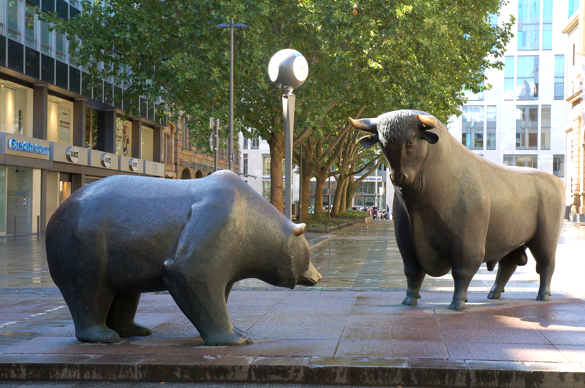

A backtest can be a very expensive mirror.
Try enough ideas and the past will eventually flatter you. Timestamp errors, survivorship bias and selection over many experiments can make weak signals look strong. Keep a sealed test period and a research log. Your next action: write the three ways your strategy could be fooling you.
Read the researchers’ warning →
